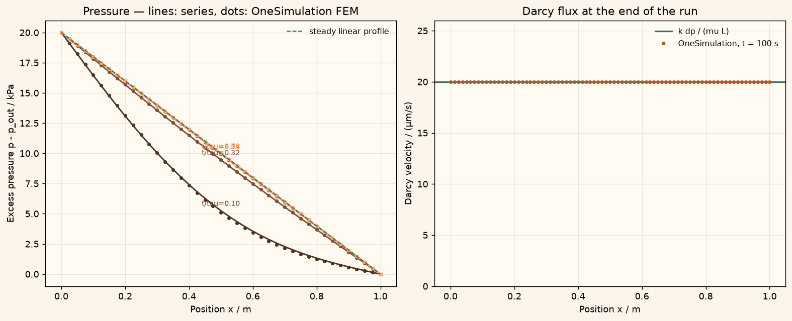

Docs › Examples › Darcy flow through a porous column
Porous-media flow · 1D
Darcy flow through a porous column
Pressure-driven flow through a porous column, graded against the linear Darcy profile and flux.

What it computes
OneSimulation integrates Darcy pressure flow in a 1D column with fixed inlet and outlet pressures until the steady state is reached.
What it checks
The transient series solution, the steady linear profile and the Darcy flux q = k dp/(mu L) match within about 1 %.
The notebook
The complete notebook, cell by cell. Run it to produce the figures and the comparison printout.
A saturated porous column of length \(L\) (permeability \(k\), fluid viscosity \(\mu\)) is initially at the uniform outlet pressure \(p_\mathrm{out}\). From \(t=0\) on the inlet is held at \(p_\mathrm{in}\) and the outlet stays at \(p_\mathrm{out}\). The pressure disturbance diffuses through the column because the pore fluid and the skeleton are slightly compressible (specific storage \(S\)), and the flow settles to the steady Darcy state.
The stored-mass Darcy equation is solved:
OneSimulation solves it with finite elements (Lagrange order 2, Nitsche boundary enforcement) and a BDF2 time step on a one-dimensional line mesh. The Darcy velocity \(q=-(k/\mu)\,\partial p/\partial x\) is reported as a derived field.
Reference. With the hydraulic diffusivity \(D=k/(\mu S)\), the time scale \(\tau=L^2/D\) and \(\Delta p=p_\mathrm{in}-p_\mathrm{out}\) the classical series holds:
For \(t\gg\tau/\pi^2\) the profile is linear and the Darcy flux is uniform, \(q=k\,\Delta p/(\mu L)\). We check the transient profiles, the final linear profile and the flux against these closed forms.
from importlib.metadata import version
import numpy as np
import matplotlib.pyplot as plt
from onesim.cad.d1 import Line
from onesim.meshing import StructuredLineMesher
from onesim.numerics import Numerics
from onesim.numerics.fem import FiniteElement, Lagrange, Nitsche
from onesim.numerics.linear import SparseDirect
from onesim.numerics.nonlinear import Newton
from onesim.numerics.time import BDF, BackwardEuler
from onesim.physics.hydrodynamics import DarcyPressureBoundary, DarcyPressureFlow
from onesim.simulation import Problem, Simulation
from onesim.simulation.initial_conditions import InitialValue
print("OneSimulation:", version("onesimulation"))Parameters
The values are freely adjustable and correspond to a metre of coarse sand (about one darcy) saturated with water. The specific storage sets how fast the pressure front travels: \(\tau=L^2/D\) is the diffusion time of the column.
L = 1.0 # m, column length
k = 1.0e-12 # m^2, intrinsic permeability (about 1 darcy)
mu = 1.0e-3 # Pa·s, water viscosity
S = 1.0e-7 # 1/Pa, specific storage (fluid + skeleton compressibility)
p_in = 1.20e5 # Pa, inlet pressure from t=0 on
p_out = 1.00e5 # Pa, outlet pressure (and initial pressure)
dp = p_in - p_out
D = k / (mu * S) # m^2/s, hydraulic diffusivity
tau = L * L / D # s, column diffusion time
q_ref = k * dp / (mu * L) # m/s, steady Darcy flux
end_time = 1.0 * tau
time_step = end_time / 50.0
print(f"D = {D:.3e} m^2/s, tau = L^2/D = {tau:.1f} s, steady Darcy flux q = {q_ref:.3e} m/s")
column = Line(start=(0.0, 0.0, 0.0), end=(L, 0.0, 0.0))
mesh = StructuredLineMesher(cells=40).generate(column)
model = DarcyPressureFlow(domain=column.line, permeability=k, viscosity=mu, pressure_storage=S)
problem = Problem(
name="Saturated Darcy flow through a porous column",
geometry=column,
physics=(model,),
boundary_conditions=(
# Both ends of the column carry a prescribed pressure.
DarcyPressureBoundary(physics=model, boundary=column.boundaries.start, value=p_in),
DarcyPressureBoundary(physics=model, boundary=column.boundaries.end, value=p_out),
),
initial_conditions=(InitialValue(model.pressure, p_out),),
)
simulation = Simulation(
problem=problem,
mesh=mesh,
numerics=Numerics(
spatial=FiniteElement(element=Lagrange(order=2), boundary_enforcement=Nitsche()),
linear_solver=SparseDirect(),
time_integrator=BDF(order=2, startup=BackwardEuler()),
nonlinear_solver=Newton(
linear_solver=SparseDirect(), jacobian="analytic",
absolute_tolerance=1e-6, relative_tolerance=1e-10,
),
),
)
simulation.validate().require_valid()
result = simulation.run(start_time=0.0, end_time=end_time, time_step=time_step)Comparison with the closed-form solution
The pressure is read at the element nodes along the column and compared with the series at several times; the Darcy velocity at the final time is compared with the steady flux \(k\,\Delta p/(\mu L)\).
def pressure_series(x, t, terms=400):
n = np.arange(1, terms + 1)
transient = np.sin(np.outer(x, n * np.pi / L)) @ ((2.0 / (n * np.pi)) * np.exp(-(n * np.pi) ** 2 * t / tau))
return p_out + dp * ((1.0 - x / L) - transient)
op = result.operators[model.model_id]
order = np.argsort(op.space.dof_coordinates[:, 0])
x = op.space.dof_coordinates[order, 0]
stored_times = np.asarray([float(t) for t in result.times])
# The first stored times after the pressure jump are dominated by the sharp
# front at the inlet; the comparison starts once the front has spread over a
# few cells (t >= 0.1 tau).
candidates = stored_times[stored_times >= 0.1 * tau]
probe_times = candidates[np.linspace(0, len(candidates) - 1, 5).round().astype(int)]
profiles = {}
max_profile_error = 0.0
print("Pressure profile error per time:")
for t in probe_times:
num = np.asarray(result.field(model.pressure).at(float(t)).values)[order]
ana = pressure_series(x, float(t))
err = float(np.max(np.abs(num - ana)))
print(f" t = {t:6.1f} s (t/tau = {t / tau:4.2f}) max|dp| = {err:8.1f} Pa ({100 * err / dp:.2f} % of dp)")
profiles[float(t)] = (num, ana)
max_profile_error = max(max_profile_error, err)
# Steady state: linear profile and uniform Darcy flux.
final_p = np.asarray(result.field(model.pressure).values)[order]
linear = p_out + dp * (1.0 - x / L)
steady_error = float(np.max(np.abs(final_p - linear)))
velocity = np.asarray(result.field(model.darcy_velocity).values)[order]
flux_error = float(np.max(np.abs(velocity - q_ref)))
print(f"Final profile vs linear: max|dp| = {steady_error:.1f} Pa ({100 * steady_error / dp:.2f} % of dp)")
print(f"Darcy velocity at t = {end_time:.0f} s: mean = {velocity.mean():.4e} m/s, reference = {q_ref:.4e} m/s,"
f" max relative deviation = {100 * flux_error / q_ref:.2f} %")Figure
cream = "#fbf5eb"
fig, axes = plt.subplots(1, 2, figsize=(12, 4.8), constrained_layout=True)
fig.patch.set_facecolor(cream)
ax = axes[0]
ax.set_facecolor("#fffaf2")
colors = plt.cm.copper(np.linspace(0.25, 0.85, len(probe_times)))
for (t, (num, ana)), c in zip(profiles.items(), colors):
ax.plot(x, (ana - p_out) / 1e3, color=c, lw=1.6)
ax.plot(x[::2], (num[::2] - p_out) / 1e3, "o", color=c, ms=3)
ax.text(0.5, (ana[len(ana) // 2] - p_out) / 1e3 + 0.4, f"t/tau={t / tau:.2f}", color=c, fontsize=8, ha="center")
ax.plot(x, (linear - p_out) / 1e3, "--", color="#39715e", lw=1.2, label="steady linear profile")
ax.set(xlabel="Position x / m", ylabel="Excess pressure p - p_out / kPa",
title="Pressure — lines: series, dots: OneSimulation FEM")
ax.legend(frameon=False, fontsize=9)
ax.grid(alpha=0.25)
ax = axes[1]
ax.set_facecolor("#fffaf2")
ax.axhline(q_ref * 1e6, color="#39715e", lw=1.8, label="k dp / (mu L)")
ax.plot(x, velocity * 1e6, "o", color="#b4572b", ms=3, label=f"OneSimulation, t = {end_time:.0f} s")
ax.set(xlabel="Position x / m", ylabel="Darcy velocity / (µm/s)",
title="Darcy flux at the end of the run")
ax.set_ylim(0.0, 1.3 * q_ref * 1e6)
ax.legend(frameon=False, fontsize=9)
ax.grid(alpha=0.25)
plt.show()Going further
Shorten end_time to look at the moving pressure front, or lower the specific storage to make the column respond almost instantly. Replacing the outlet pressure by a prescribed outward Darcy flux (DarcyFluxBoundary) turns the problem into a flux-driven column whose steady profile is set by that flux.